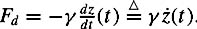
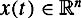
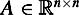
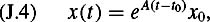

|
| |||||||||||||
|
|
||
This Appendix gives a brief review of the theory of linear time invariant (LTI) dynamical systems. Many dynamical systems that appear in science and engineering can be approximated by LTI systems, and linear systems theory provides important tools to control and observe them. We focus on the so-called state space formulation of LTI systems because that is the formulation used in the Kalman filter (see chapter 8). In this appendix we present some of the more fundamental concepts of LTI state-space systems, including stability, feedback control, and observability.
Consider as an example the mass-spring-damper system depicted in figure J.1, where z(t) denotes the position of the mass m at time t. If we assume that the spring is linear, then the force applied by the spring is given as Fs = −kz(t). Likewise, if we assume that the damper is linear, then the force applied by the damper is proportional to the velocity of the mass, yielding . For now we assume the externally applied force Fext = 0. Summing these forces and applying Newton's law (force = mass × acceleration) yields
This second-order ordinary differential equation (ODE) provides a mathematical description of how the position and velocity of mass change with time. Accordingly, we call equation (J.1) a model of the mass-spring-damper system. If the position z and velocity ż are known at some instant of time t0, then the solution to equation (J.1) subject to initial conditions z(t0) and ż(t0) will match the trajectory of the physical system.
Now define the vector
Equation (J.1) can be rewritten in terms of x as follows:
which can finally be summarized as
Thus we have taken a second-order scalar ODE and rewritten it as a first-order vector ODE. We call this first-order vector ODE the state-space representation of the mass-spring-damper system, and the state vector x(t)is a member of the state space. Since the right hand side of equation (J.2) can be written as a constant matrix multiplied by the state vector, this system is both linear and time invariant.
Generally, an LTI state-space system can be written as the vector ODE,
where  and . This ODE is sometimes called a vector field because it assigns a vector Ax to each point x in the state space. This ODE has a unique solution, and the solution can be written in closed form,
| (J.4) | 
|
where the matrix exponential is defined by the Peano-Baker series
|
|
||
|